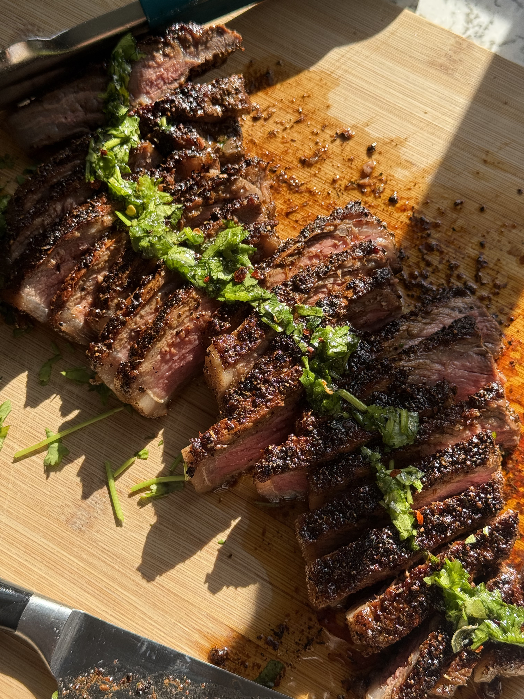
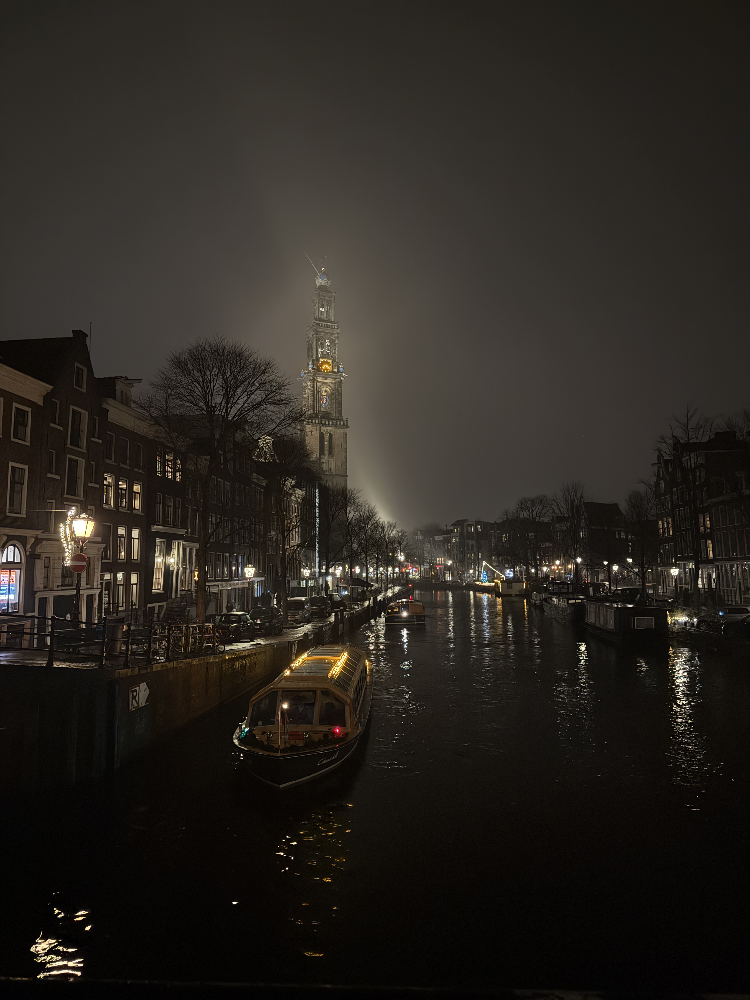
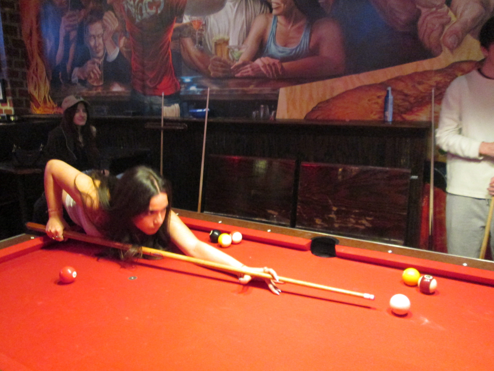
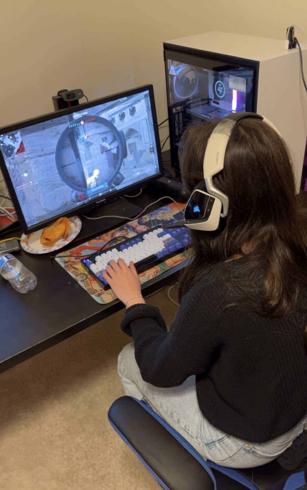

Do I have any?
Short answer is yes.
I feel like I don't have many consistent hobbies. This ties back into my want to try new things and various things. I love new and I love change. Sometimes change is scary, I have my routines.
I like to say my hobbies are exploring and trying new things. My hobbies are different everyday, and that is how I like to live. I like picking up new things and I try to have the mindset that it's never too late to pick something up.
As a more direct answer, I tend to do any activities I used to love to tumble and every once in a while I try to check if I still have it. I like to play intramural sports with my friends like volleyball and pickleball. I try to paint and draw and I am not very good at it. I love editing photos and videos, and photography in general. I also enjoy video games, though I used to play a lot more when I was younger, but sometimes do it every once in a while today. My favorite game of all time is Super Mario Galaxy on the Wii
Food!
A more consistent thing I love to do is I love to cook. My current fixation is perfecting my steak. I have my specifics to it, like it must come from Whole Foods or a good butcher, and my process has improved every time. I like to think back to my Engineering principles when perfecting my process. I love trying new recipes and twisting them to make them my own. My favorite thing is cooking for others, and I'd consider it my love language.
I try to learn what I consider a more difficult dish every once in a while, like recently I cooked lamb chops for the first time. The challenge is riveting, and the reward is quite fufilling. It's dinner as well as instant gratification on if the results were good or not. There may be a deeper meaning behind all of this, but I'll choose to ignore it.
The art of a fufilling lifestyle
Having a fufilling lifestyle isn't easy. You must be ready to give up a lot of that downtime to yourself. Though I love that time, and do set that time aside (i.e selfcare) I am usually rushing a lot to try to make everything that I want to do. It can be stressful, but it has taught me a lot.
It is an art in the way that it can't be performative. It's for you. You must be able to handle the pressure, the stress, and be organized with it. You make a mistake, and you may end up doing something you don't want to, or going to things too much that you miss out on other opportunities or get behind with your true responsibilities.
Having a fufilling lifestyle isn't just about going out and doing things, but also taking care of yourself in the meantime. I take care of my skin every day, I take care of myself and look as put together as possible every day. My hair, makeup, and outfit are almost always done. This helps me feel more put together and - fufilled. Back to my page about my values, being successful, having a drive, and having a purpose play a large role in my fufillment. Having my friends and having those human interactions contribute heavily to my fufilling lifestyle. Having a bedroom that is designed to my liking is crucial as well. All these things didn't happen in a day and require a lot of effort, but I will always ensure all these aspects are to my liking - allowing me to feel fufilled.
Various Things




